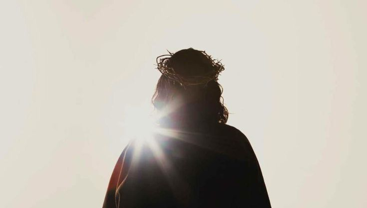

Narcotráfico
Es el comercio ilegal de drogas. Su alcance puede involucrar redes criminales, violencia, corrupción, explotación y disputas por el control de territorios.
Detrás de cada noticia existe una historia. Detrás de cada crimen, una víctima. Y detrás de tanta oscuridad, una esperanza que no debemos perder.
DESCUBRIR LA REALIDADEl crimen no es solamente una cifra en las noticias. Es una realidad que transforma familias, comunidades y países enteros.
El narcotráfico, los asesinatos, la trata de personas, las desapariciones, la corrupción y el crimen organizado son problemas que afectan a millones de personas.
Muchas veces conocemos estos acontecimientos por medio de una noticia y continuamos con nuestro día. Sin embargo, detrás de cada caso hay vidas, familias que buscan respuestas y personas que esperan justicia.
Esta página busca informar, reflexionar y recordar que ninguna víctima debe ser reducida a un simple número.
La violencia no tiene una sola cara. Existen diferentes delitos que dejan consecuencias profundas en la sociedad.
Es el comercio ilegal de drogas. Su alcance puede involucrar redes criminales, violencia, corrupción, explotación y disputas por el control de territorios.
Son estructuras delictivas que operan de manera coordinada y pueden participar en diferentes actividades ilegales, afectando la seguridad de comunidades enteras.
La privación de la vida de una persona es una de las expresiones más graves de violencia. Cada caso deja familias marcadas por la pérdida y exige justicia.
Consiste en captar, trasladar o recibir personas mediante engaños, amenazas o abuso de poder con fines de explotación.
La desaparición de una persona deja a sus familiares en una búsqueda llena de incertidumbre. Cada persona desaparecida merece ser buscada y recordada.
Ocurre cuando alguien utiliza su poder o cargo para obtener beneficios indebidos. Puede debilitar las instituciones y facilitar la impunidad.
El narcotráfico no solamente representa un negocio ilegal: también puede convertirse en una fuente de violencia, miedo y destrucción social.
Las organizaciones dedicadas a este delito pueden extender su influencia mediante amenazas, extorsiones, corrupción y otras actividades criminales.
Sus consecuencias alcanzan a personas que no tienen ninguna relación con estas organizaciones: familias, comerciantes, jóvenes y comunidades que viven bajo la presión de la violencia.
También existe un problema que no siempre recibe suficiente atención: las personas que son utilizadas, amenazadas o forzadas a participar en actividades criminales.
No debemos confundir la popularidad de ciertos personajes criminales con admiración. Detrás de sus historias existen víctimas y consecuencias reales que no deben olvidarse.
El poder obtenido mediante el miedo nunca debe confundirse con grandeza.
¿Qué sucede cuando quienes deberían proteger a la sociedad permiten que el crimen avance?
La corrupción puede permitir que personas o grupos criminales obtengan protección, recursos o ventajas mediante actos ilegales. Cuando las instituciones pierden su integridad, la confianza de la sociedad también se debilita.
Existe impunidad cuando los responsables de un delito no reciben una investigación y sanción conforme a la ley. Esto puede dejar a las víctimas sin respuestas y aumentar la desconfianza en las autoridades.
La justicia no debería depender del dinero, los contactos o el poder de una persona.
Estos acontecimientos muestran las consecuencias del crimen y la importancia de conocer la verdad.
La noche del 26 al 27 de septiembre de 2014, 43 estudiantes de la Escuela Normal Rural de Ayotzinapa desaparecieron en Iguala, Guerrero.
El caso se convirtió en un símbolo de la lucha de las familias por conocer la verdad, encontrar a sus seres queridos y obtener justicia.
Consultar información oficial ↗Conocido como «El Chapo», fue identificado como uno de los principales líderes del Cártel de Sinaloa.
En 2019 fue condenado en Estados Unidos a cadena perpetua más 30 años de prisión. Su caso mostró el alcance internacional de las redes del narcotráfico.
Consultar información oficial ↗Jeffrey Epstein fue acusado federalmente en 2019 de tráfico sexual de menores.
Murió bajo custodia antes de enfrentar el juicio federal. El caso provocó una discusión internacional sobre explotación, poder y responsabilidad.
Consultar información oficial ↗Las imágenes de fondo son ilustrativas y no representan fotografías documentales de las personas o acontecimientos.
Cuando hablamos de crimen, no debemos olvidar a quienes sufren sus consecuencias.
Cada persona afectada tiene una historia, una familia, sueños y un futuro que merecía vivir. Las desapariciones, los asesinatos, la explotación y la violencia dejan consecuencias que pueden durar generaciones.
Las familias de las víctimas muchas veces deben enfrentar búsquedas interminables, procesos difíciles y la falta de respuestas. Por eso, recordar sus historias también significa reconocer su dignidad.
No podemos cambiar el pasado de quienes han sufrido, pero sí podemos exigir que la verdad sea investigada, que las víctimas sean escuchadas y que los responsables enfrenten la justicia.
Informarnos, rechazar la violencia y no glorificar a los criminales también forma parte de construir una sociedad más consciente.

En medio de tanta oscuridad, violencia e injusticia, existe una luz que nunca deja de brillar: Dios.
Cuando observamos el sufrimiento que existe en el mundo, podemos llegar a pensar que todo está perdido, que la maldad ha ganado y que las cosas nunca cambiarán. Pero Dios representa la esperanza de que el mundo puede ser diferente.
Un mundo donde las personas dejen de hacer daño, donde el odio no tenga más fuerza que el amor, donde la violencia sea reemplazada por la paz y donde la justicia no sea solamente un deseo, sino una realidad.
Dios nos recuerda que siempre existe un camino para alejarnos del mal. Que el cambio es posible y que no debemos perder la esperanza de que algún día las personas comprendan el valor de la vida, la bondad y el amor.
Porque la oscuridad que vemos en el mundo no significa que Dios haya dejado de ser luz. Y aunque hoy existan tantas injusticias, todavía podemos tener esperanza en un futuro diferente.
“La luz en las tinieblas resplandece, y las tinieblas no prevalecieron contra ella”. Juan 1:5
Que nunca dejemos de buscar la verdad, exigir justicia y mantener la esperanza en un mundo mejor.